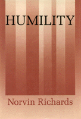

A unique philosophical examination of what it means to be humble
A unique philosophical examination of what it means to be humble


 A unique philosophical examination of what it means to be humble
A unique philosophical examination of what it means to be humble

|  |
HumilityNorvin Richardscloth EAN: 978-0-87722-927-8 (ISBN: 0-87722-927-9) |
"By focusing on humility, Richards is able to get a rather novel fix on some important moral issues, like paternalism, famine relief, and non-treatment of the terminally ill.... An original contribution."
—Jeffrey Blustein, Mercy College
Although considered one of the virtues, humility seems to be generally regarded as more pitiable than admirable. It is often confused with false modesty, a lack of self-respect, or the underestimation of one's accomplishments. In the first extended treatment of humility in modern times, Norvin Richards examines this puzzling virtue, redeems it from common misconceptions, and discusses the effect humility can have on one's life.
The author argues that true humility consists in understanding yourself and what you have done too clearly to be inclined to exaggeration. To be humble means taking oneself no more seriously than one should and not having unreasonable beliefs about one's moral entitlements. It also means knowing what kind of treatment to give to and expect from others. This ability to maintain a proper perspective is clearly a desirable characteristic.
With lively and familiar examples, Richards explores the ways humility can protect us from a variety of mistakes. He considers the relationship between humility and forgiveness, envy and jealousy, and paternalism. He asks what it requires in terms of compassion, ambition, and the simplicity or opulence of life and he relates the virtue of humility to our culture of arrogance, elitism, and blind ambition.
Acknowledgments
Introduction
1. Is Humility a Virtue?
2. Mistreatment
3. Compassion
4. Envy and Jealousy
5. Paternalism and Arrogance
6. "It's My Life!"
7. The Simple Life
8. The Virtue of Humility
Notes
Index
Norvin Richards is Professor of Philosophy at the University of Alabama, Tuscaloosa.
© 2015 Temple University. All Rights Reserved. This page: http://www.temple.edu/tempress/titles/925_reg.html.